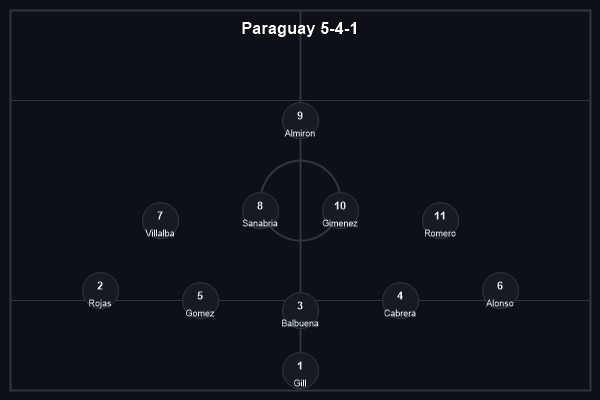
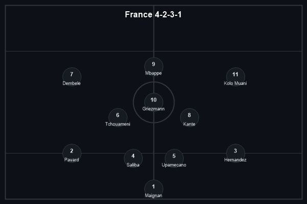
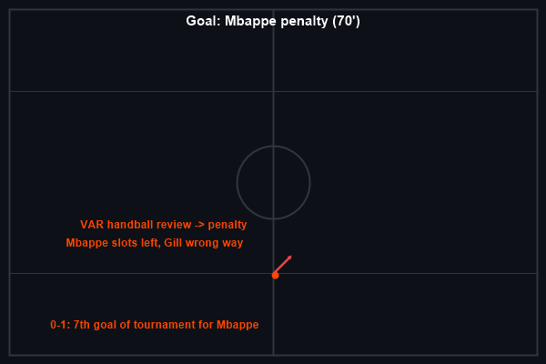
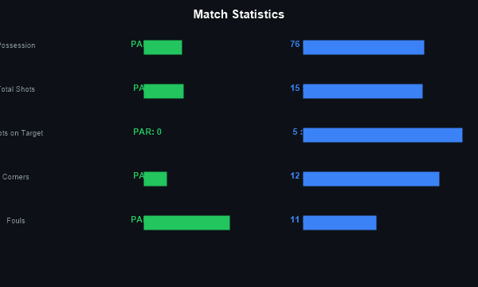
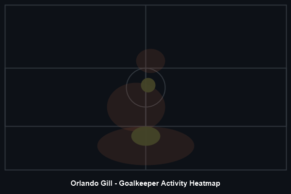

Paraguay 0-1 France. It was never going to be pretty. France entered as overwhelming favorites against a Paraguay side that had just eliminated Germany on penalties, and for 69 minutes, Paraguay's deep block looked capable of forcing extra time again. Mbappe's 70th-minute penalty — his seventh goal of the tournament — was the only moment of incision in a match defined by defensive organization, heat, and a staggering gulf in possession.
The win sends France to the quarterfinals for the fourth consecutive World Cup, where they'll face Morocco. For Paraguay, there is no shame here. Orlando Gill's performance — four saves, countless crosses collected, and a penalty save in the previous round — earned him Player of the Match despite the loss.
Paraguay set up in a 5-4-1 that was effectively a 6-3-1 out of possession. Their gameplan was clear: absorb pressure, frustrate France, and hope for penalties. France, in their usual 4-2-3-1, had 76% possession but struggled to find gaps through the middle third.
The key tactical battle was France's wide overloads against Paraguay's five-man back line. France completed 35 left-channel entries and 31 right-channel entries, yet managed just 5 shots inside the penalty area all game. Paraguay's discipline in their shape was exceptional — they forced France into 10 shots from outside the box, most of which were speculative.
70' — Mbappe (penalty) — France 1-0. The decisive moment came from a VAR review. A Paraguay defender was judged to have handled in the box following a corner. Mbappe stepped up, sent the goalkeeper the wrong way, and scored his record-extending 11th World Cup knockout-stage goal. It was his seventh goal of the tournament, moving level with Messi and Haaland in the Golden Boot race.


The stat sheet tells the story of a one-sided contest that somehow remained competitive. France attempted 587 passes to Paraguay's 191, completed 526 to Paraguay's 108. Yet for all that dominance, France managed only 5 shots on target — and it took a penalty to break the deadlock. Paraguay committed 13 fouls to France's 11, a physical approach that disrupted rhythm without crossing into indiscipline.
Paraguay pressed 268 times to France's 95, a remarkable work rate for a team with only 24% of the ball. But they forced only 37 turnovers, evidence that France's passing quality — particularly through Kounde and Tchouameni — was enough to play through the pressure.

The 29-year-old goalkeeper was named Michelob Ultra Superior Player of the Match despite being on the losing side. Gill made 4 saves, including a crucial low stop to deny Bruno Guimaraes in the first half and a reflex save from a Kolo Muani header. His distribution under pressure was composed, completing 12 of 18 long passes to relieve pressure. If Paraguay had held on for penalties, Gill — who saved two spot-kicks against Germany — would have been the story of the round.
France advance to the quarterfinals where they'll face Morocco in a rematch of the 2022 semifinal. For Mbappe, the Golden Boot race is now a three-way tie with Messi and Haaland at seven goals each. For Paraguay, elimination comes with pride intact — they pushed the tournament favorites to the limit and exit with the knowledge that their defensive organization troubled even the most feared attack in world football.